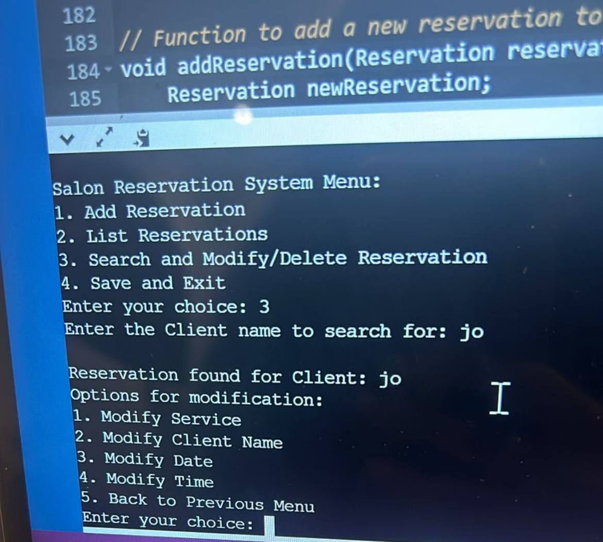

JOUD KHAILD
21 years old
Software Engineering Student

21 years old
Software Engineering Student
University of Jeddah - Bachelor's in Software Engineering (2023-2027)
I studied English at an institute in Jeddah (2022-2024)
Professional Certifications in Software Engineering I have earned certifications in Software Engineering, learning best practices and tools like Agile methodologies. These certifications have helped improve my skills in software design, development, and testing.
This project is a Salon Reservation System built using a console-based interface. It allows users to add, list, search, modify, and delete reservations for salon appointments. Users can search for a client’s booking and update details like service, name, date, or time.
ER-University is a university database system for managing students, courses, faculty, and enrollments** using an ER model. ensuring efficient data storage and retrieval.
Open the PresentationView the resume hosted on GitHub:
View ResumeEmail: joodii78@gmail.com
LinkedIn: my LinkedIn Profile